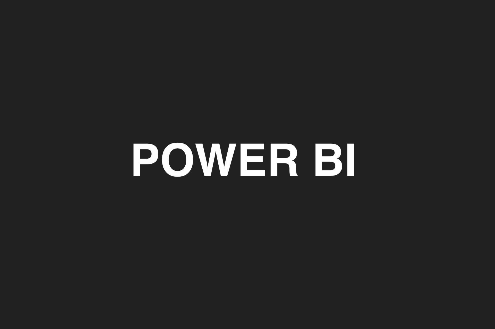

I'm a Data Analyst
- Name: Yousra Yajioui
- Job: Data Analyst
- Age: 23 Years
- Residence: Ottawa, On, Canada
I'm Yousra Yajioui, a Data Analyst driven by a passion for unraveling the insights hidden within data. With a diverse skill set and a thirst for knowledge, I thrive on transforming raw information into actionable intelligence.
My journey in data analytics began with a Bachelor of Science in Computer Science with a Minor in Business Administration from Al Akhawayn University in Morocco, where I graduated with honors, earning the distinction of Cum Laude. An exchange semester at Bogazici University in Turkey expanded my horizons both academically and culturally, shaping me into a well-rounded professional.
Proficient in Python, SQL, and analytical tools like Power BI and Tableau, I excel in navigating databases such as Oracle, MySQL, and PostgreSQL across Windows, Linux, and macOS platforms. My technical acumen is complemented by practical experience gained during my tenure as a Data Analyst at CommonShare. Here, I leveraged Python to develop efficient data analysis scripts, streamlined workflows, and mentored interns to foster a culture of continuous learning.
Beyond my professional endeavors, I'm deeply committed to community service and global engagement. Active participation in organizations like the Lions Club and Hand in Hand Club underscores my dedication to making a positive difference in the world.
In my free time, I love 💪🏽 heading to the gym, 📚 reading novels, 🇹🇷 and learning languages, or simply hanging out with friends over a ☕ coffee.
My Skills
Python
SQL
Power Bi
Tableau
IBM Cognos Analytics
Excel
My Education
-
Algonquin College
Graduate Certificate 2023-2024- Business Intelligence System Infrastructure
-
Al Akhawayn University
Ifrane, Morocco Bachelor of Science 2018-2023- Bachelor of Science in Computer Science
- Minor in Business Administration
- Exchange Semester - Bogazici University, Turkey
- Honor: Cum Laude
My Experience
-
Data Analyst
CommonShare, Remote, United States Jun 2022- Jan 2024- Used Python to develop data analysis scripts and automated tasks, improving workflow efficiency.
- Developed automated data collection scripts, increasing data retrieval speed.
- Managed project tasks and issues, enhancing team collaboration Using Jira and Slack.
- Collaborated with data architects to develop and document organizational data assets and definitions for 3000+ sustainable company profiles.
- Procured, processed, and integrated data from over 1000 primary sources, increasing depth and richness of data repository.
- Recruited and mentored new data analyst interns, developed an internship program providing hands-on experience in data analysis.
-
Teaching and Research Assistant - Part Time
Al Akhawayn University, Ifrane, Morocco Sep 2022 - Dec 2022- Collaborated with a biology and chemistry professor on research projects by helping in data collection decreasing research time by 40%.
- Corrected and marked exam sheets for 90 Biology and Chemistry students.
- Monitored and responded to student inquiries.
-
Data Analyst Intern
Innov DS, Fez, Morocco May 2022 - Jul 2022- Collaborated in creating BI dashboards using Python for grouping capital and actions of clients.
- Collaborated with stakeholders to establish standardized data structures.
- Conducted data cleansing of 5 large excel raw data spreadsheets and transformation to enhance data quality and usability.
-
Marketing Intern
Chamesse, El Jadida, Morocco Jun 2020 - Jul 2020- Participated in implementation a marketing campaign in all Moroccan regions to reach one million customers.
- Designed 5 user-friendly interface for company's website pages using Figma, and HTML/CSS.
- Conducted targeted online customer satisfaction surveys, reaching 1000+ respondents, to gather feedback on campaign effectiveness and product/service satisfaction.
My Recommendations
My Projects
-
-
View Project

Sentiment Analysis of Health Canada Survey Data
In Progress...
In collaboration with my teammates, I will be undertaking a capstone project that involves analyzing survey results published by the Government of Canada. These surveys are publicly available and contain valuable information regarding public opinions and experiences related to healthcare services across the country. Our project will specifically focus on leveraging this data to conduct sentiment analysis, aiming to uncover sentiments expressed by respondents towards various aspects of healthcare provision.
